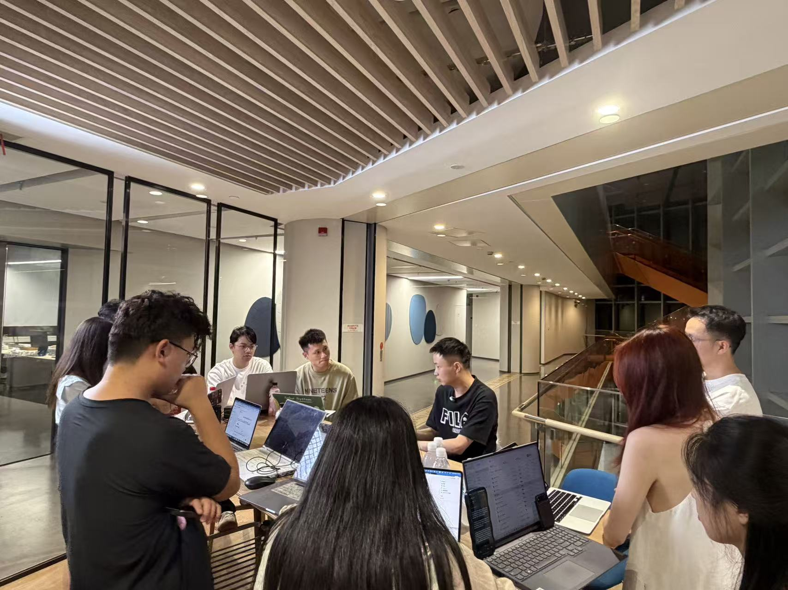
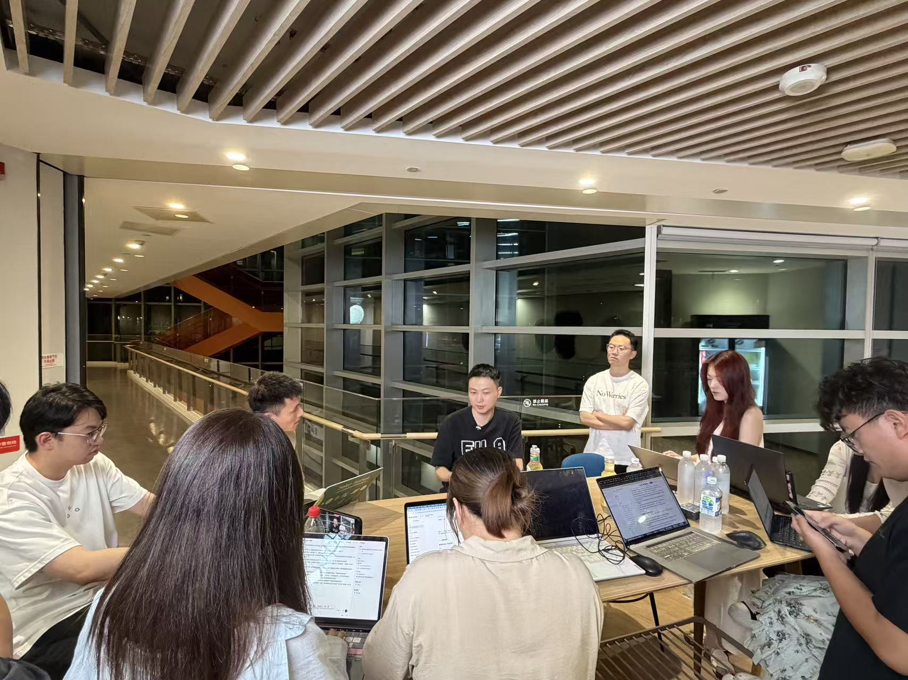
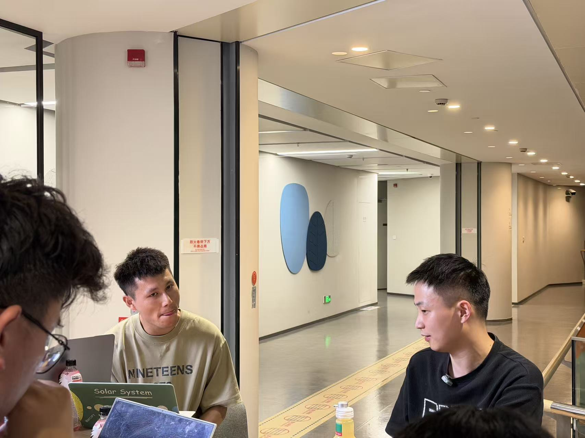
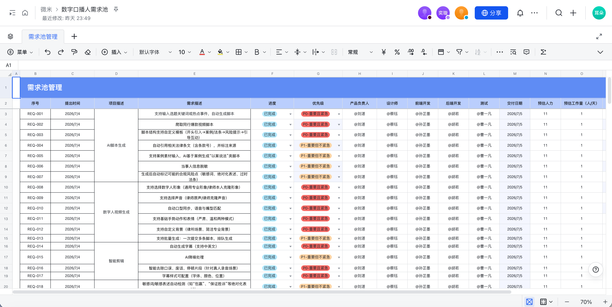
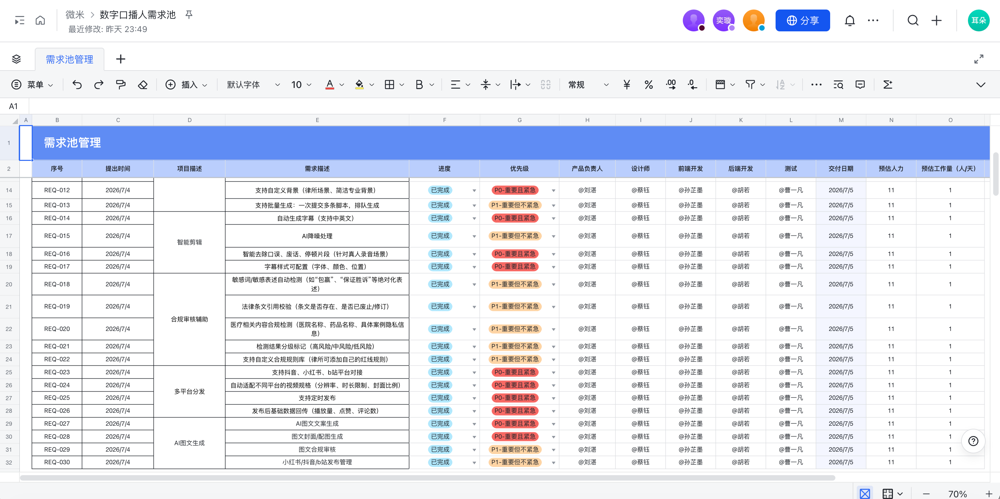

01
律师资产
访谈中的断更问题，本质是律师本人无法持续出镜。首页看板和数字人库先把律所律师整合成可选择、可生产的数字资产。
从真实业务访谈出发，梳理医疗法务内容生产的核心卡点，推导数字人口播产品的功能闭环。
准备阶段形成了团队分工、用户画像框架、十一类访谈模块和现场影像记录。下方卡片均对应《访谈问题汇总.pdf》的真实内容。



《访谈问题汇总.pdf》第一页记录了团队分工：刘湛负责组长/主访谈/研发，曹一凡负责摄影，李淼负责剪辑，同时设置书记员角色，确保现场提问、影像、文字材料和后续 DEMO 都有人承接。
访谈前先定义用户画像：姓名、年龄、性别、城市、家庭角色、职业岗位、收入、使用频次、核心诉求、常用功能和未用功能。这个框架用于避免只问“想要什么功能”，而忽略用户是谁、在哪里用、为什么用。
提纲覆盖业务背景与目标、不方便出镜、节约成本、内容形态与脚本、数字人形象与声音、合规肖像审美边界、合规与安全、商业模式、运营与技术、预算周期、竞品参考。
PDF 后半段明确沉淀访谈记录、文字记录、文档总结、录音记录、照片记录、视频记录、调研复盘、可视化方案报告和 DEMO，说明访谈不是一次性聊天，而是后续产品设计的证据库。
现场照片呈现了围桌访谈、电脑同步记录、受访者佩戴麦克风、团队多人围绕问题追问的状态，可用于证明信息来自真实访谈而非产品侧自设假设。
提纲明确节奏：前 10 分钟聊业务背景，让业务方进入状态；中间 30 分钟按模块自然过渡；最后 10 分钟回到“最希望产品做到什么”。同时强调记录带情绪的原话，因为它们往往是真实需求信号。
访谈问题来自《访谈问题汇总.pdf》的正式提纲，下面每个节点都能看到对应问题、用户反馈和产品侧提取信息。
真实访谈没有被改写：核心矛盾仍是律师本人、脚本、声音、资产和生产效率。这里把这些发现重新对齐到当前已经具备的六个产品功能。
需求池来自《数字口播人需求池.xlsx》，共 30 条有效需求，已按 P0/P1、功能模块和交付状态整理。


需求池仍以真实访谈为基础。这里把优先级改成“现有功能先承接，访谈需求再增强”的版本，避免和当前产品能力脱节。
这里改成六个现有功能的一一对应：每个入口都能追溯到访谈证据，同时标出还需要继续增强的访谈需求。
规划以《访谈问题汇总.pdf》中的 PRD 为准：第一期只做能验证核心价值的 MVP，后续再扩展克隆、剪辑、分发和数据能力。